教える側が、もう限界
新人教育がOJT任せ。先輩の負担だけが膨らみ、指導の中身が人によってバラバラになる。
新入社員合同研修 ／ 堺・なかもず ／ 2027
新入社員育成プログラム
KIZUKU
採用の先まで、育てきる。
人が育てば、会社はもっと強くなる。
15日で基礎を定着させ、その後1年、配属後の課題まで伴走します。
会場は堺市産業振興センター。なかもず駅から徒歩4分。
人が育てば、会社は強くなる
育成方針
KIZUKUは、マナー研修の切り売りではありません。 人材派遣・人材紹介で人と企業をつないできたショウヨウが、 採用のあと「活躍するまで」を1年かけて背負うプログラムです。
知識を並べて終わり、にはしません。 あいさつ、報連相、数字の見方、現場の安全。必要な型を、その場でやらせて身体に入れます。 楽しさと、企業が安心して任せられる厳しさ。両方ないと、人は残りません。
新卒が辞める理由の多くは、入社直後ではなく配属のあとです。 だから集合研修で終わらせず、社外メンターが本音を拾い、6月と9月にもう一度集めます。
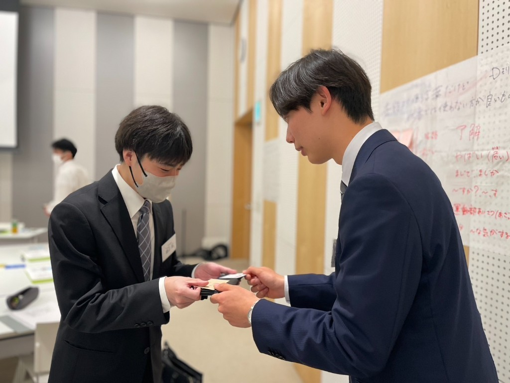
採用で終わらせない。
活躍まで支える。
新人教育がOJT任せ。先輩の負担だけが膨らみ、指導の中身が人によってバラバラになる。
社会人の型がないまま配属すると、覚えることから始まる。戦力化が、その分だけ遅れる。
配属直後の壁と、夏のマンネリ。フォローが切れたところで、辞める話が始まる。
〈KIZUKUの強み〉
ビジネスマナー5日、専門コース8日、キャリア2日。平日9時から17時、計105時間。
社外メンターとの1on1。言えない不満と離職の芽を、企業へフィードバックします。
6月末・9月末のフォロー研修。目標を自分の言葉で置き直し、次の行動までつなぎます。
開催情報
判断に必要な数字だけ、先に置きます。詳細カリキュラムは企業の状況に合わせてご案内します。
| 研修名 | KIZUKU（ショウヨウ 新入社員育成プログラム） |
|---|---|
| 実施企業 | ショウヨウ株式会社 |
| 日程 | 2027年4月5日（月）〜4月23日（金） 9:00〜17:00 平日15日間／土日を除く（1日7時間 × 15日＝105時間） |
| 会場 | 堺市産業振興センター（なかもず駅徒歩4分） 〒591-8025 大阪府堺市北区長曽根町183-5 大阪メトロ御堂筋線 なかもず駅8番出口から徒歩約4分 |
| 開催形式 | 対面 |
| 対象 | 入社1年目の新入社員（高卒・大卒いずれも可／2年目以降は原則対象外） |
| コース | 共通コース ＋ 営業コース ／ 製造コース |
| 費用 | 1名あたり 420,000円（税別） |
| 定員 | 50名（先着順）。少人数（1名〜）から参加できます |
| 申込締切 | 2026年12月25日（金） |
※費用は税別です。企業ごとの重点テーマは、お問い合わせのうえ調整します。
得られること
新入社員の「型」と、配属後に折れない理由を、同じ15日の中に入れます。
あいさつ、敬語、身だしなみ、名刺、上座・下座、報連相、G-PDCA。信頼される動きを、繰り返し手でやります。
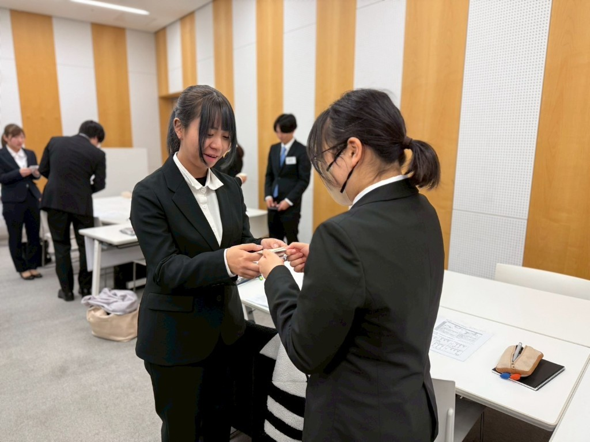
マナーの5日が終わったら、コースに分かれます。テレアポと計数か、品質・安全・納期か。配属先の机で使う中身です。
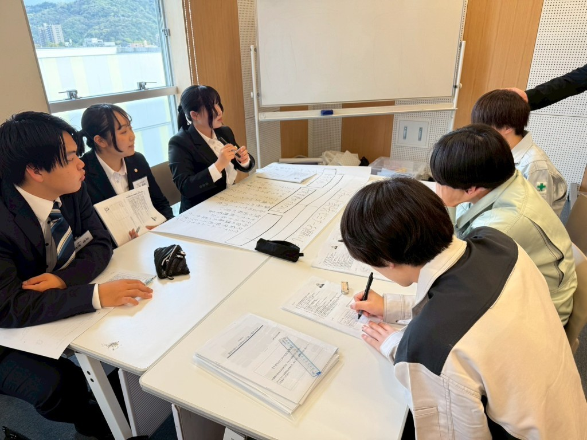
キャリア設計とアクション宣言。他社の同期と並ぶことで、自社を相対化できます。視野が広がったうえで、自社に戻します。
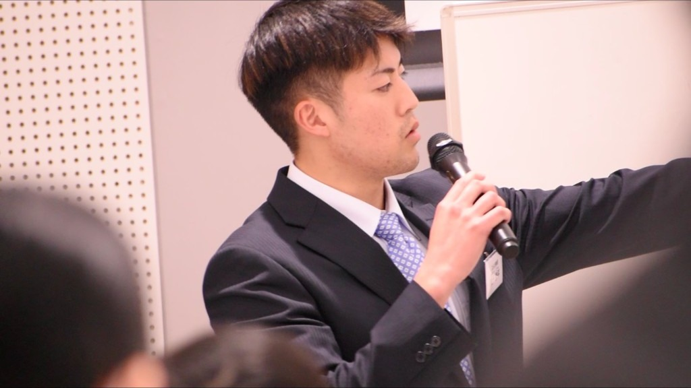
実績ハイライト
このプログラムは、本部で11年続けてきた職場定着の型です。 毎年中身を直し、「いま」の新入社員に合わせています。 下の数字は、その累計です。
★本部実績の11年間累計値（2026年10月時点）
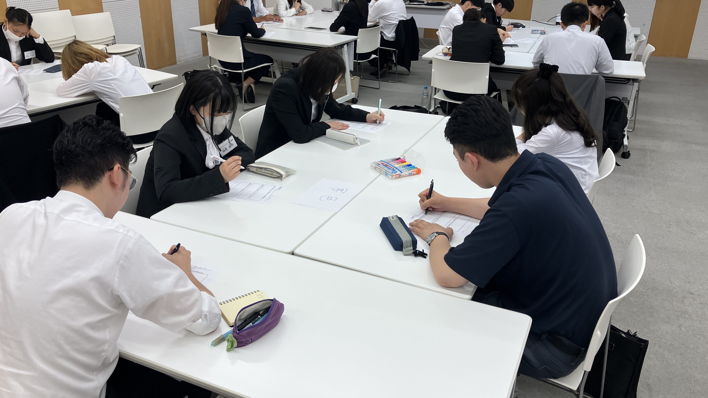
プログラム
グループ討議、ロールプレイ、発表。アクティブラーニングを7割以上で組んでいます。ラーニングピラミッドで示される定着の高い側、実践と発表を中心にします。
KIZUKUが厚く取るのは、下段の実践側です。
社会人と学生の違い、敬語、名刺交換、上座・下座、オンライン会議、報連相、G-PDCA。全員共通です。
営業コースか、製造コースか。配属を意識した実践に分かれます。講師も、コースごとに違います。
もう一度、全員で。聴き方、スタイル別の伝え方、他社理解、キャリア設計、アクション宣言。
担当：池田講師。社会人の型と、最後のキャリア設計までを見ます。
マナー、専門、キャリア。行動計画までその場で書かせます。
社外メンターが本音とメンタルの兆しを聞き、企業へ返します。
配属直後の壁と、夏のマンネリ。他社同期と会い、目標を置き直します。
1年の振り返りと、次の目標。辞めないだけでなく、活躍する側へ。
講師
共通と営業は池田講師。製造は重松講師。2名で登壇します。
Monolith Arts 代表
ビジネスマナー 5日＋営業 8日
税理士法人で月次監査・決算と税務調査の立ち合いを担当し、その後は財務労務の責任者として経理・人事と補助金申請を見てきました。 いまは資金繰りを根拠にしたコーチングと、会計を使った研修を開いています。
幸献コンサルティング株式会社 代表取締役
1994年、現・オリンパスの海外生産部門へ。フィリピン、香港、中国、ベトナムと約10年、工場の現場に立ちました。 ベトナムでは新工場を16カ月で立ち上げ、工場長として1,000人規模を3,000人規模へ育てています。 2026年5月、幸献コンサルティングを設立。「働く誇り」を現場からつくる、が仕事です。
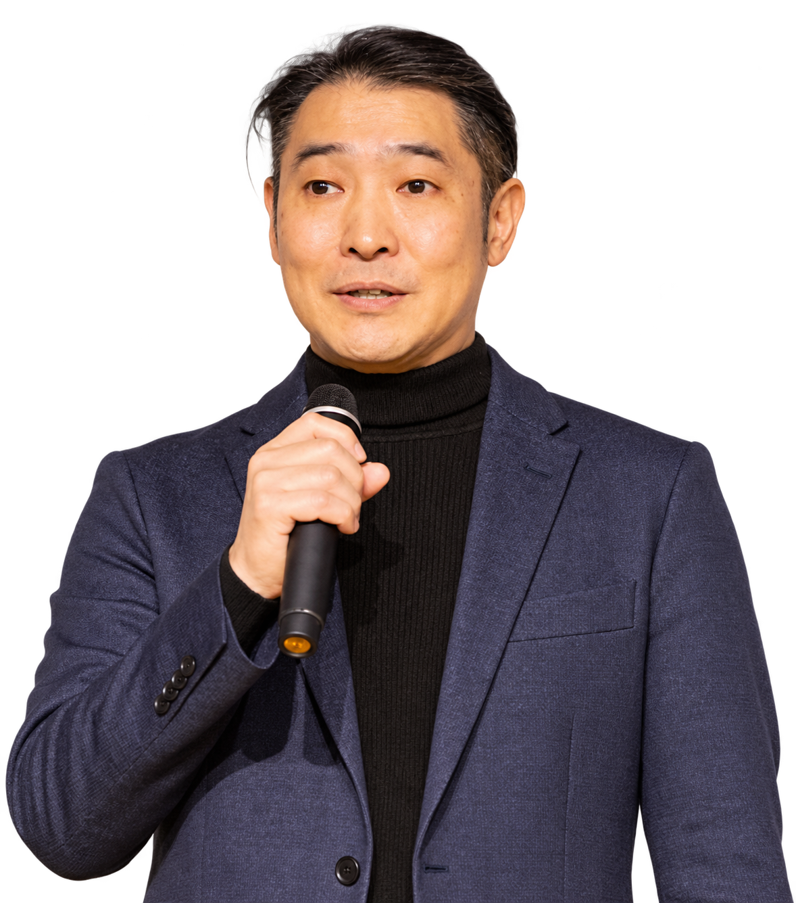
お客様の声
静岡本部で11年続けてきた導入企業・受講生の声です。数字と同じく、本部実績（2026年10月時点の累計）として掲載しています。
目の色が変わった。「辞める・辞めない」の議論が、職場から消えました。新入社員が、自分の将来を考えるようになったことが何よりです。
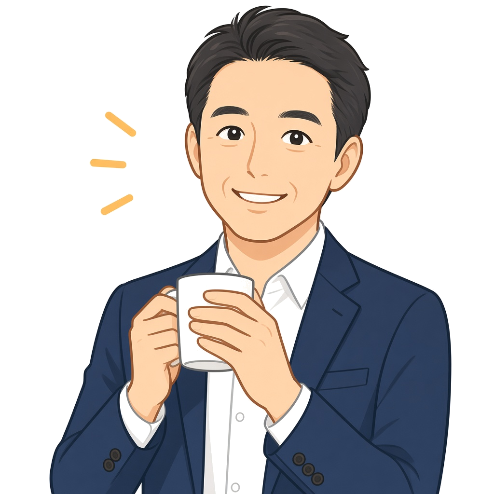
日に日に、表情と行動が変わっていくのが分かりました。違う業界の仲間と学んだ経験が、明るさとモチベーションにつながっています。
自分の仕事が会社の利益にどうつながるか、構造で分かりました。配属後のコミットの仕方が、まるで違いました。
結論ファーストと、相手目線の話し方が癖になりました。最初の営業同行で、新規のリードを取れました。
ショウヨウの約束
採る力で終わらせない。育てる仕組みを渡す。
私たちは人材派遣と人材紹介で、企業と働く人のあいだに立ってきました。 採用のあとの立ち上がりと定着が、中小企業の未来を分けることも、その現場で見てきました。 KIZUKUは、その1年を再現できる形にしたものです。
人を紹介するだけではなく、
人が活躍するところまで支える。
研修風景
講義だけで終わりません。対話、発表、ワークが中心です。
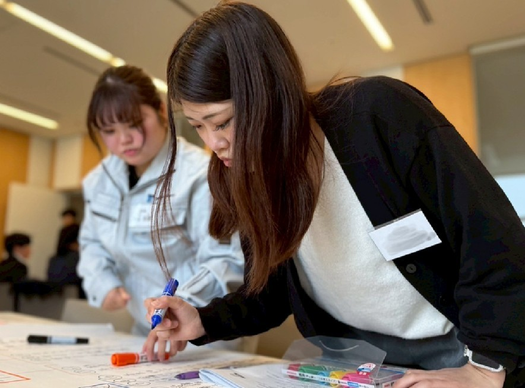
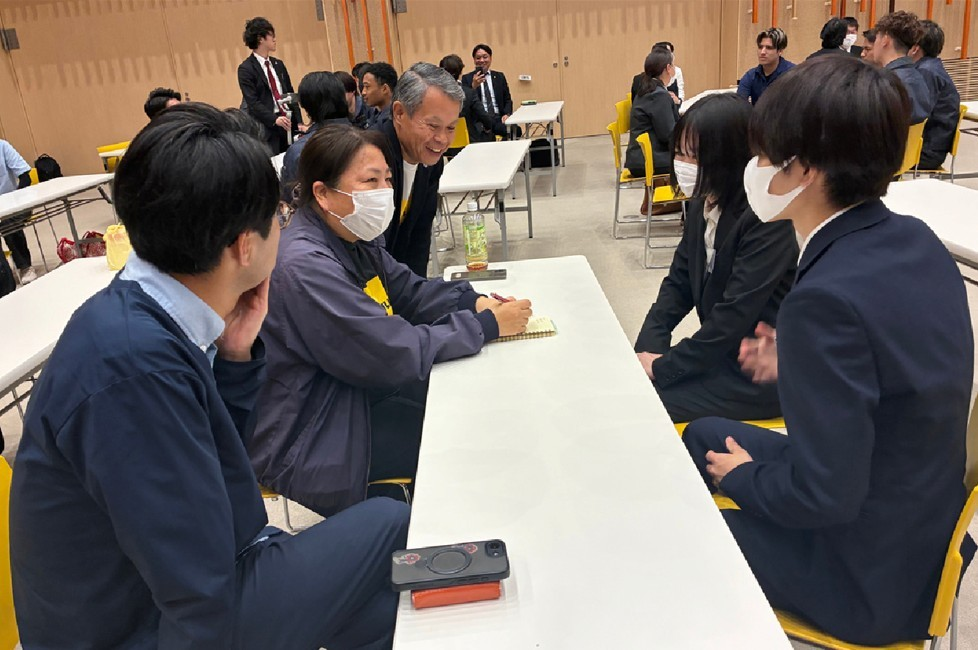
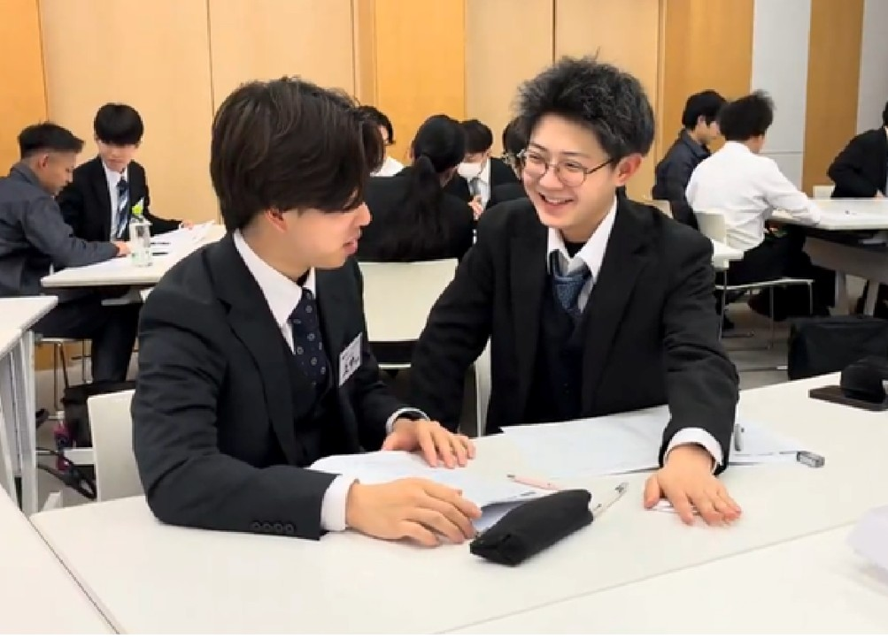
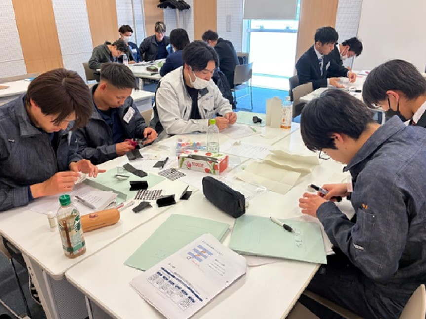
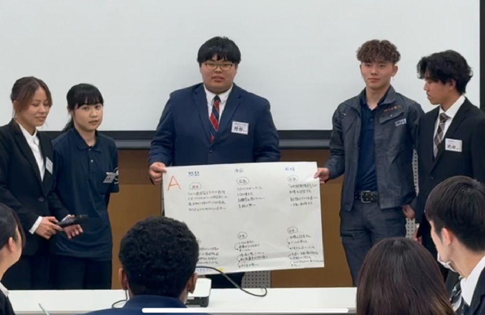
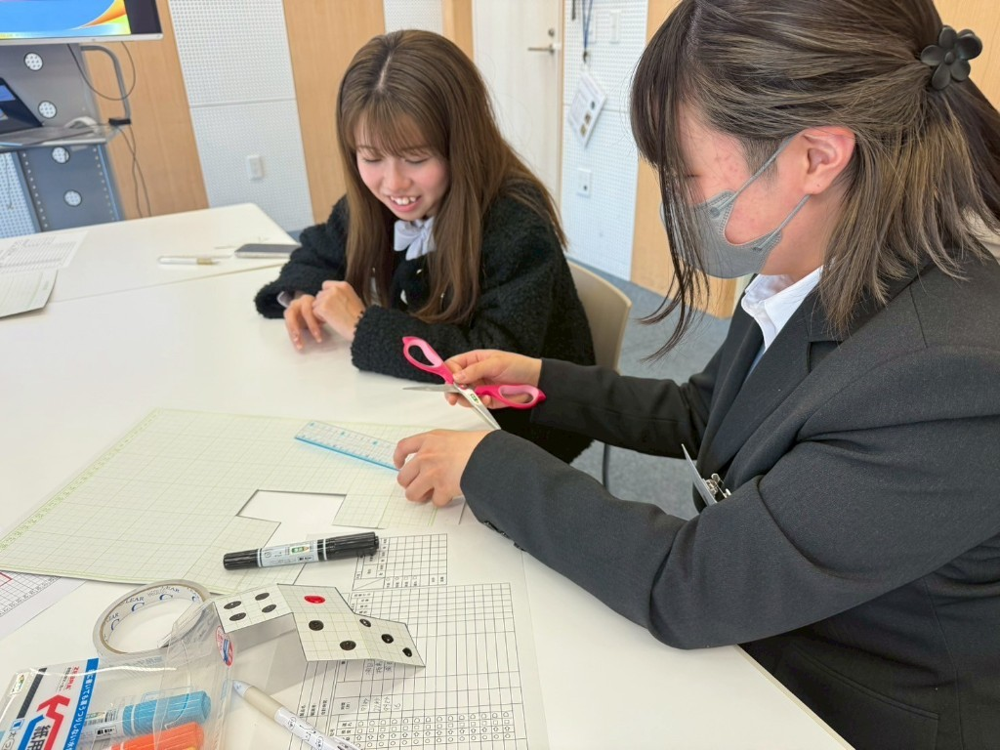
FAQ
それでも足りなければ、電話でもメールでも構いません。
2027年4月5日（月）〜4月23日（金）、堺市産業振興センター。
締め切りは2026年12月25日（金）。1名420,000円（税別）。
TEL 072-259-3480 ／ kizuku@shouyou.co.jp